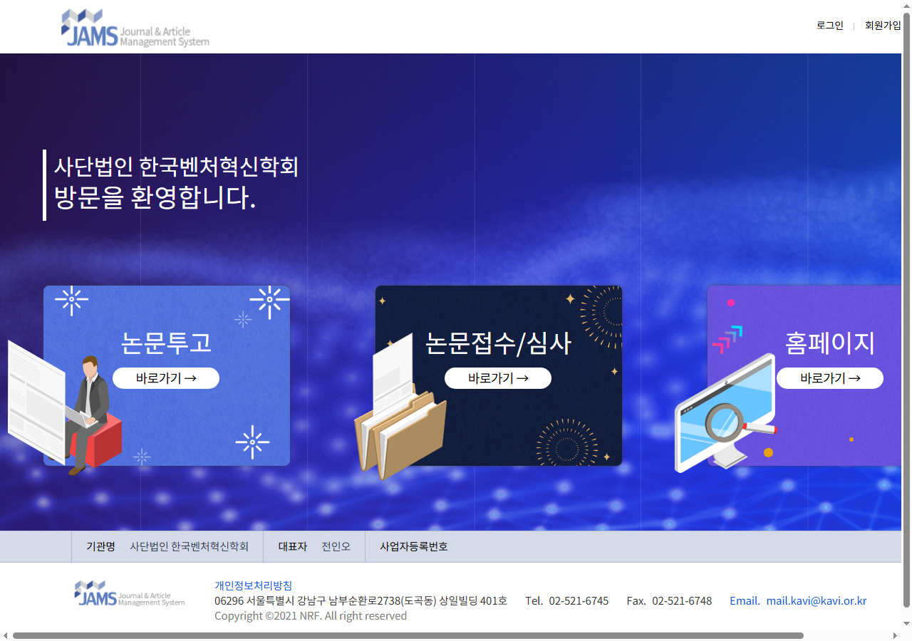
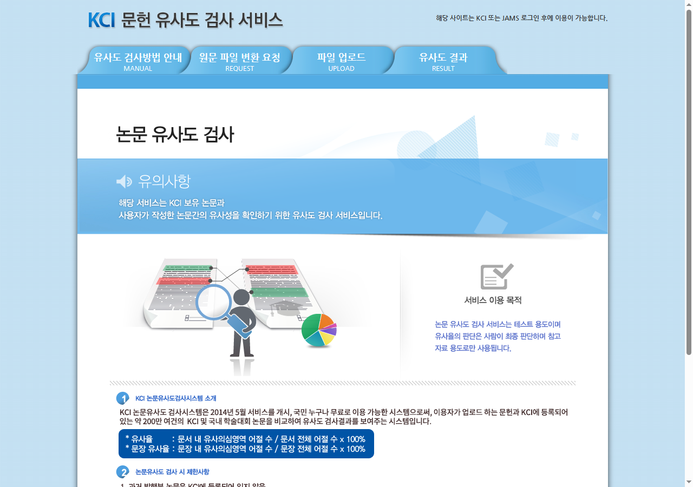
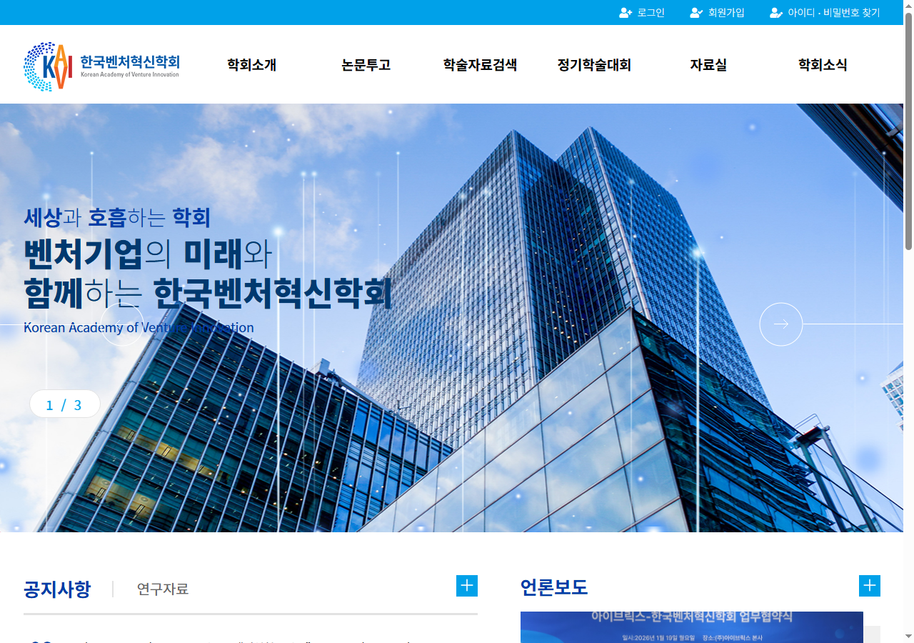

📋 준비물 확인 & 양식 다운로드
논문을 투고하기 전에, 먼저 아래 양식 파일들을 다운로드 받으세요.
이 파일들은 논문 투고 과정에서 작성하거나 참고해야 하는 자료입니다.
🖥️ JAMS 논문투고 시스템 회원가입
논문을 투고하려면 JAMS(온라인 논문투고 시스템)에 먼저 회원가입을 해야 합니다.
아래 버튼을 클릭하면 JAMS 사이트가 새 창에서 열립니다.
▼ JAMS 사이트 화면입니다. 오른쪽 상단의 "회원가입" 버튼을 클릭하세요.

JAMS 사이트에 접속합니다
위의 버튼을 클릭하면 새 창이 열립니다.
오른쪽 상단 "회원가입" 클릭
화면 오른쪽 상단에 있는 "회원가입" 글자를 클릭합니다.
한국연구재단(KRI) 계정 확인
KRI 계정이 있으면 해당 계정으로 로그인합니다. 없으면 "신규가입"을 선택합니다.
개인정보 입력 후 가입 완료
이름, 소속, 이메일 등을 입력하고 가입을 완료합니다.
📝 학회 회원가입 신청서 작성 & 메일 발송
「1. kavi 회원가입신청서.hwp」 파일을 작성하신 후, 아래 이메일 주소로 보내주세요.
「1. kavi 회원가입신청서.hwp」 파일을 엽니다
다운받은 파일을 한글(HWP) 프로그램으로 엽니다.
양식에 맞게 내용을 작성합니다
모든 항목을 빠짐없이 기입해 주세요.
작성한 파일을 저장합니다
저장하지 않으면 내용이 사라질 수 있습니다.
아래 이메일 주소로 파일을 첨부하여 발송합니다
mail.kavi@kavi.or.kr
✍️ 논문 작성
「3. 벤처혁신학회 논문 샘플.HWP」과 「5.(최종본)한국벤처혁신학회 논문편집규정(개정안).hwp」을 참고하여 논문을 작성하세요.
「3. 벤처혁신학회 논문 샘플.HWP」 파일을 열어 형식을 확인합니다
글꼴, 줄 간격, 여백 등을 반드시 맞춰주세요.
샘플의 형식에 맞춰 논문을 작성합니다
저자 정보(이름, 소속 등)를 삭제한 버전을 따로 저장합니다
이 파일이 심사용 파일로, 6단계에서 JAMS에 업로드합니다.
투고할 때는 저자 정보가 없는 논문(심사용)을 제출해야 합니다.
논문 안에 저자 이름, 소속 등 본인을 알 수 있는 정보를 모두 지워주세요.
심사위원이 누구의 논문인지 모르는 상태에서 공정하게 심사하기 위해서입니다. 이를 "블라인드 심사"라고 합니다.
🔍 KCI 유사도 검사
작성한 논문이 다른 논문과 얼마나 비슷한지 검사해야 합니다.
KCI(한국학술지인용색인) 시스템에서 유사도 검사를 진행하세요.
▼ KCI 유사도 검사 사이트 화면입니다.

KCI 유사도 검사 사이트에 접속합니다
위 버튼을 클릭하면 새 창이 열립니다.
로그인합니다
KCI 또는 JAMS 계정으로 로그인합니다. 계정이 없으면 회원가입을 먼저 하세요.
"파일 업로드" 메뉴에서 논문 파일을 업로드합니다
검사 완료 후 「상세내역」을 다운로드합니다
이 파일은 6단계에서 JAMS에 함께 업로드합니다.
📤 JAMS에서 논문 투고하기
이제 본격적으로 논문을 투고합니다.
2단계에서 가입한 JAMS 시스템에 로그인하여 논문을 제출하세요.
JAMS에 로그인합니다
"논문투고" → "바로가기" 버튼을 클릭합니다
아래 화면에서 왼쪽 "논문투고" 영역의 바로가기를 누르세요.
논문 정보를 입력합니다
논문 제목, 초록, 키워드 등 정보를 입력합니다.
아래 파일들을 업로드합니다
✅ 저자 정보 없는 투고 논문 (심사용) — 4단계에서 준비한 것
✅ KCI 유사도 검사지 (상세내역) — 5단계에서 받은 것
"제출" 버튼을 누릅니다
📧 투고카드도 이메일로 보내주세요
「2. kavi 투고카드.hwp」를 작성한 후, 아래 이메일 주소로 보내주세요.
mail.kavi@kavi.or.kr
JAMS에서 논문을 투고하는 것만으로는 투고 절차가 완료되지 않습니다.
반드시 투고카드와 회원가입신청서를 이메일로도 보내주셔야 합니다!
시스템 오류 등으로 JAMS에서 투고가 안 되면, 아래 이메일로 자료를 직접 보내주세요:
edit@kavi.or.kr
💰 비용 입금
논문 투고와 함께 아래 비용을 입금해 주셔야 합니다.
| 항목 | 금액 | 비고 |
|---|---|---|
| 가입비 | 50,000원 | 최초 1회 |
| 연회비 | 50,000원 | 매년 |
| 심사료 | 60,000원 | 논문 1편당 |
| 심사료 (긴급) | 120,000원 | 긴급 심사 시 |
| 게재료 | 300,000원 | 심사 통과 후 납부 |
| 초과 페이지 | 20,000원/페이지 | 15페이지 초과 시 |
| 외부지원(사사) 논문 | 600,000원 | 기본 게재료 포함 |
• 카드 결제는 불가합니다. 계좌이체만 가능합니다.
• 게재료는 심사 통과 후에 납부합니다. (투고 시에는 가입비 + 연회비 + 심사료만)
입금자 이름을 반드시 "이름 + 입금 사유"로 적어주세요.
예시:
• "홍길동평생회비" • "홍길동회원가입비" • "홍길동연회비"
• "홍길동심사비" • "홍길동게재료"
❓ 자주 묻는 질문
네, 별개입니다! JAMS는 온라인 논문투고 시스템이고, 학회 회원가입 신청서는 한국벤처혁신학회에 정식 회원으로 가입하기 위한 서류입니다. 두 가지 모두 완료해야 합니다.
총 4가지를 제출합니다:
① 저자 정보 없는 투고 논문 (JAMS에 업로드)
② KCI 유사도 검사지 상세내역 (JAMS에 업로드)
③ 회원가입 신청서 (이메일로 발송)
④ 투고카드 (이메일로 발송)
edit@kavi.or.kr 이메일로 모든 자료를 직접 보내주시면 됩니다.
게재료(30만원)는 심사를 통과한 후에 납부합니다. 투고 시에는 가입비, 연회비, 심사료만 입금하시면 됩니다.
투고 논문은 합본 1부, 별쇄본 10부를 발행하여 보내드립니다.
📞 도움이 필요하신가요?
투고 과정에서 어려운 점이 있으시면 언제든 연락해 주세요.
▼ 학회 홈페이지 화면입니다.
